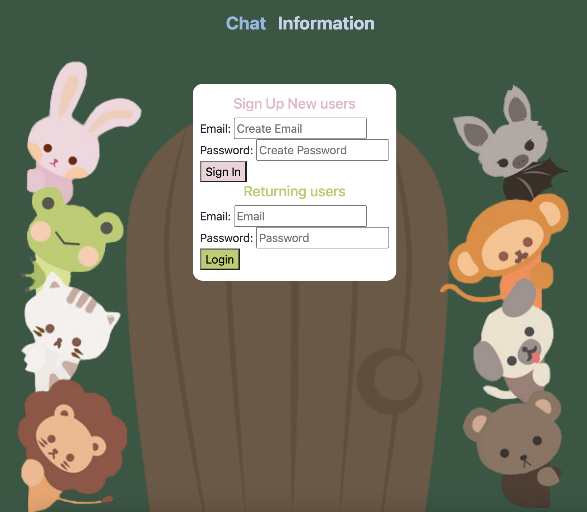
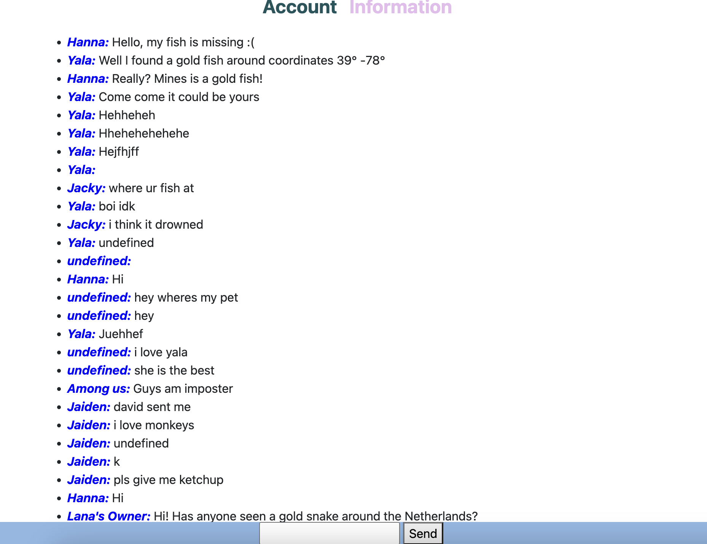
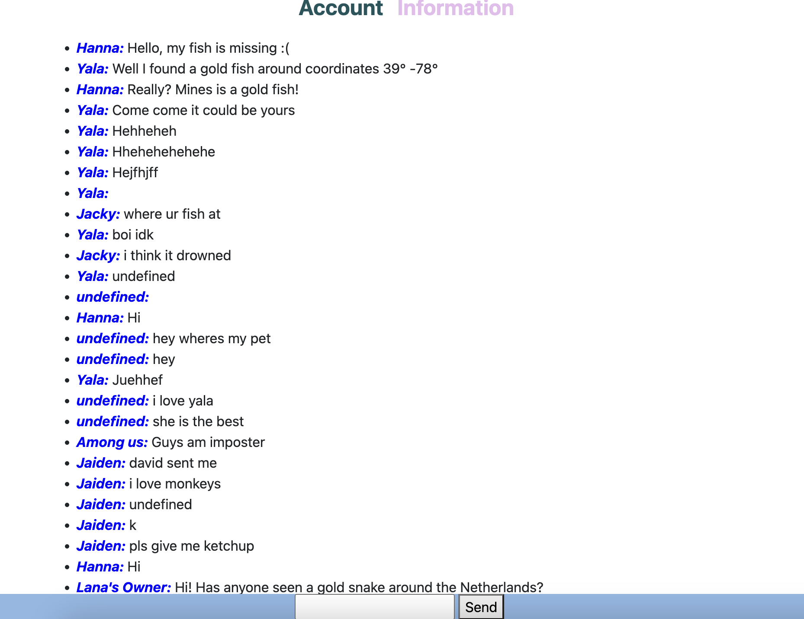

Pet Finder WebApp
Context
The "Freedom Project" for SEP11 is all about creating a product using JavaScript with the tool of your choice. The purpose of this product is to create a functional interactive program that reflects to what we been learning year long and a demonstration of our skills.
Content
For my project, my team mate, Yala, David, and I made a pet finder web app to help people find their lost pets through connection with other people using out tools Firebase with David and I, and LeafLet with Yala. Our web app containd three pages, the aunthenication page that allows users to signup and login for their data to be saved, the information page for the user to provide information about their lost pet such as the coordinates, name, and description, and a chat page so the user can share their contact information and connect with other people to help you find their lost pet or the other way around.
Link
ProductBlog
Reflection
One challenge I had with Firebase is making the message visible to other user, I had the varaible fetchChat to disable messages on the screen however, I haven't told the computer what data I want displayed and I need to create a database collection and send in the data using db.ref("messages/" + timestamp).set. One challenge my team faced was scheduling, we each had seperate responsibilities and at times we could not work at the same time so we had often merge conflicts. In the end we communicated and made sure that we updated each others in our group chat about changes made in our product.
To present our year-long project, my school held an expo where students present the product through an elevator pitch. On a side note, the product should be something that you enjoy and are proud of. After my teammates and I presented our elevator pitch, we discussed ways that we could have done to improve the quality of our elevator pitch. First, we should practice and get comfortable presenting which we have done but because we have different classes we didn't have the opportunity to do so together. Second, we should invite the audience to try the app. We experiemented with this and realized that when we invited people to try out web app, it attarcts more people to come. Lastly, remember you don't have to follow your plan word for word but stick with the main points. Sticking to the plan word for word can make your presesation sound ungenunie and the audience could lose interest so it's important to be true and honest.
During our in-class presentation, we didn't practice transitions, and it lead our first presentation to feel messy. After we practiced and split up the slides for our second presentation, we understood the significance of organization and coordination. In our case with a gif in our slides, we should narrate each part so the audience has a better understanding of what they are looking at. Since, we used Firebase we could have also shown our behind the scenes as evidence that their data is being saved.
For next stpes, we plan to implement pictures that the user can send in the chat so that other people have a better clue of the animal's visual aspect.
 
